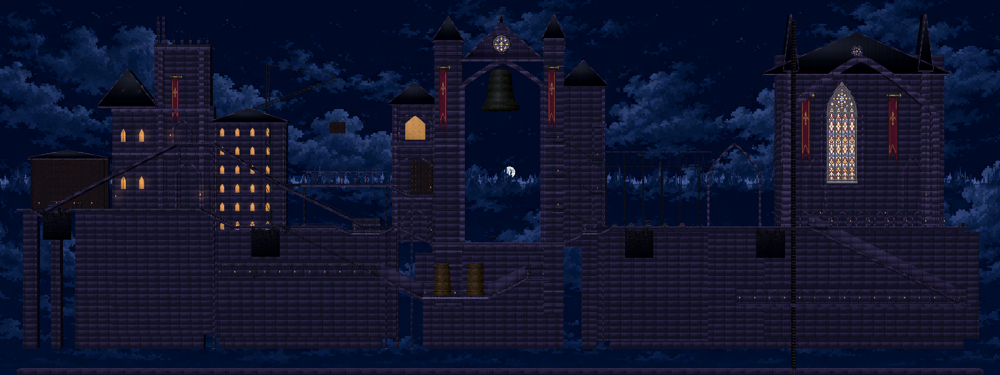
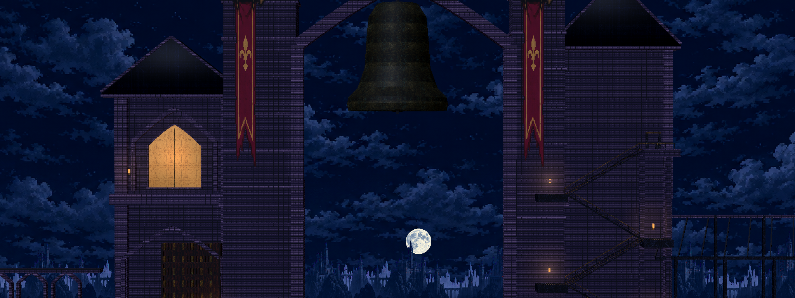
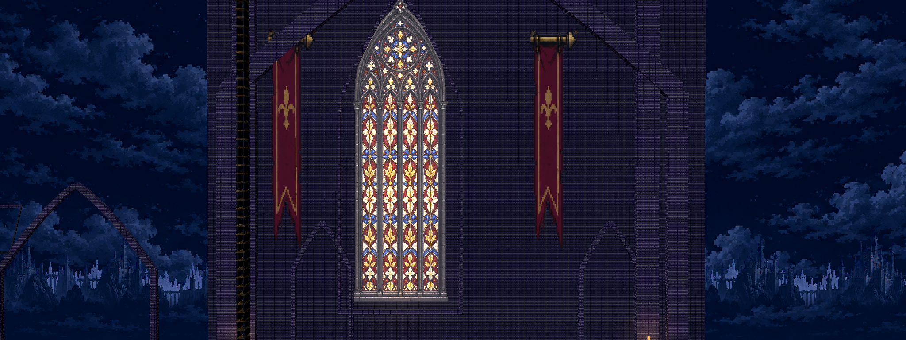
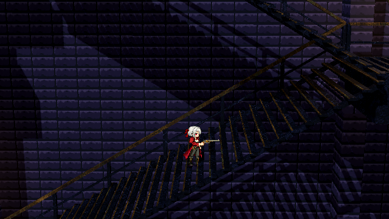
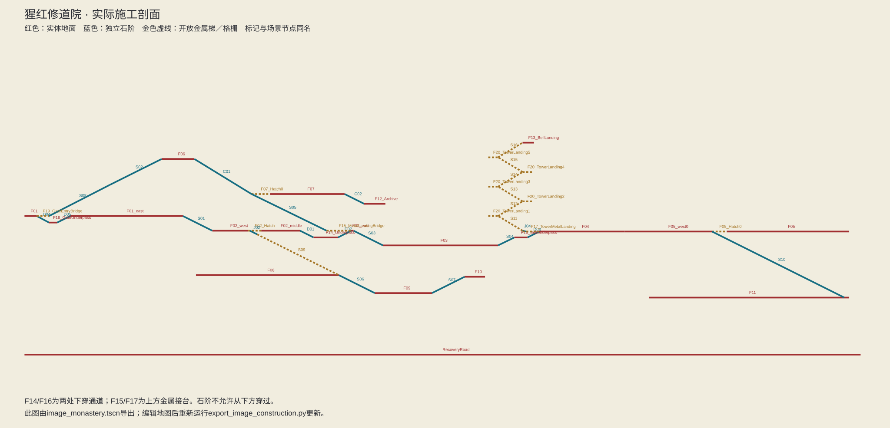

2026-09-20。主要建筑依照原图的相对位置和轮廓施工；仍以现有二维物理决定可走区域。角色没有按示意图中的人物大小放大。

这是审阅专用远镜头，显示整座建筑。正常游戏使用更近的透视镜头，不使用这张总览作为背景。

左侧高低门楼、中央尖拱钟门与长旗、档案侧楼和钟梯实体后墙、右侧玻璃花棚及礼堂彩窗均为已接入场景的结构。




原图中的树木、车辆、建筑磨损和室内陈设密度尚未完整复现；当前墙面材质也比原图更均匀。这一版本完成主要建筑轮廓和通行结构，不作为最终场景美术验收。
门楼下穿道与钟楼接台是为实际通行补充的构件。开放金属折返梯下降时需要 S 选择下梯；普通石阶只需 A/D。